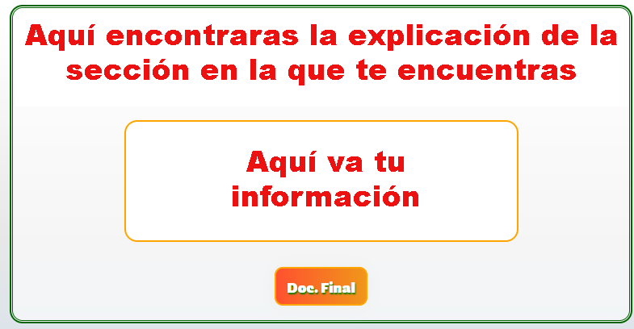

Para disfrutar de una mejor experiencia rota tu dispositivo

Selecciona del menu la opción que deseas observar:
A continuación nos mostrará

Título o Nominación: El primer paso para la formulación del Proyecto Escolar Ambiental es buscar un título o nombre adecuado. Debemos tener en cuenta:
A. ¿Cuál es el tema que vamos a trabajar en el proyecto?
B. ¿Quiénes vamos a trabajar en proyecto?
C. ¿Dónde se realizarán las actividads del proyecto?
Introducción: Es la presentación general del proyecto, describiendo en forma resumida la propuesta de trabajo. Se deben explicar los objetivos, alcances, limitaciones y la manera de ejecutarlo.
Una buena introducción se identifica cuando al leerla logramos transmitir la idea clara del pryecto.
Identificación problema: Permite conocer la situación que se va a abordar como tema de estudio y la identificación hacia donde se va a dirigir.
Justificación: Requiere que hagamos una exposición de las inquietudes que nos han llevado a su formulación y que nos motivan a realizarlo, explicando las razones, importancia y valor que tienen. De la misma manera, debemos estudiar las condiciones que harán posible la ejecución del proyecto y los posibles resultados.
Propósitos: Contienen de forma general y específica los objetivos y/o logros que concretamente nos vamos a proponer con el desarrollo del proyecto.
Algunas características de los propósitos:
1. Claramente formulados.
2. Deben estar ligados al tema en estudio.
3.Concretos y medibles.
4. Que faciliten la evaluación del proyecto.
Metas: Son los mismos propósitos que acabamos de formular, pero en esta ocasión debemos proponerlos teniendo como referencia un tiempo determinado para alcanzarlos.
Marco referencial: Son los conceptos que nos pueden servir de apoyo para nuestra investigación, es necesario que estén relacionados con los objetivos. Podemos hacer planteamientos de experiencias que ya han sido construidas por otras relacionadas con el tema ambiental.
Las fuentes para seleccionar las referencias pueden ser: experiencias, estudios, estadísticas, informaciones directas, material bibliográfico y otros documentos.
Diseño Metodológico: Para el diseño y la implementación de nuestro PRAE, debemos definir el lugar donde se desarrollará el proyecto, las personas que participarán del mismo y la población que podría resultar beneficionada en el proceso. Es necesario que con ayuda de nuestro profesor o profesora, elaboremos de acuerdo a nuestras necesidades algunos instrumentos para la obtención de la información: guías, encuestas, entrevistas y cuestionarios.
Recursos: Los recursos para el PRAE, los podemos identificar teniendo en cuenta la siguiente clasificación.
Humanos: hacemos referencia a las personas que participan en el proyecto.
Institucionales: comprometemos las instituciones que integran el proyecto.
Físicos: los materiales, instalaciones, instrumentos, equipos y herramientas.
Económicos: señalamos los posibles gastos y la manera de financiarlo. Para ello, realizamos un informe que describa de manera organizada los gastos que implica la elaboración y ejecución del Proyecto.
Cronograma: Es un calendario de trabajo, en el cual vamos a realizar una descripción detallada de las actividades que hemos programado, determinando la fecha, su duración y las personas responsables.
Este cronograma debe ser conocido y constantmente revisado por los particpantes con el fin de garantizar el edsarrollo de lo planeado y ajustar las actividades, tiempos y responsabilidades que lo requieran.
Conclusiones: Deben mostrar de manera sintetizada el resultado obtenido del PRAE, mediante la formulaciónde algunas ideas concretas para la reflexión de la experiencia.
Resultados: El diario de campo es un instrumento el cual consiste en un libro donde registraremos cada una de las experiencias vividas en el proyecto, destacando los aspectos postivos y negativos encontrados en cada una de ellas.
El diario será nuestro archivo, podemos incluir fotos, instrumentos (encuestas, cuestionario, etc.), actas y evaluaciones de las actividades realizadas. La valoración de estos aspectos nos va a permitir la formulación de análisis y resultados.
Conclusiones: Deben mostrar de manera sintetizada el resultado obtenido del PRAE, mediante la formulación de algunas ideas concretas para la reflexión de la experiencia.
Resultados: El diario de campo es un instrumento el cual consiste en un libro donde registraremos cada una de las experiencias vividas en el proyecto, destacando los aspectos postivos y negativos encontrados en cada una de ellas.
El diario será nuestro archivo, podemos incluir fotos, instrumentos (encuestas, cuestionario, etc.), actas y evaluaciones de las actividades realizadas. La valoración de estos aspectos nos va a permitir la formulación de análisis y resultados.
Bibliografía: Recordemos que debemos relacionar todas las fuentes consultadas para el desarrollo de nuestra investigación. Es necesario conocer als normas ICONTEC.